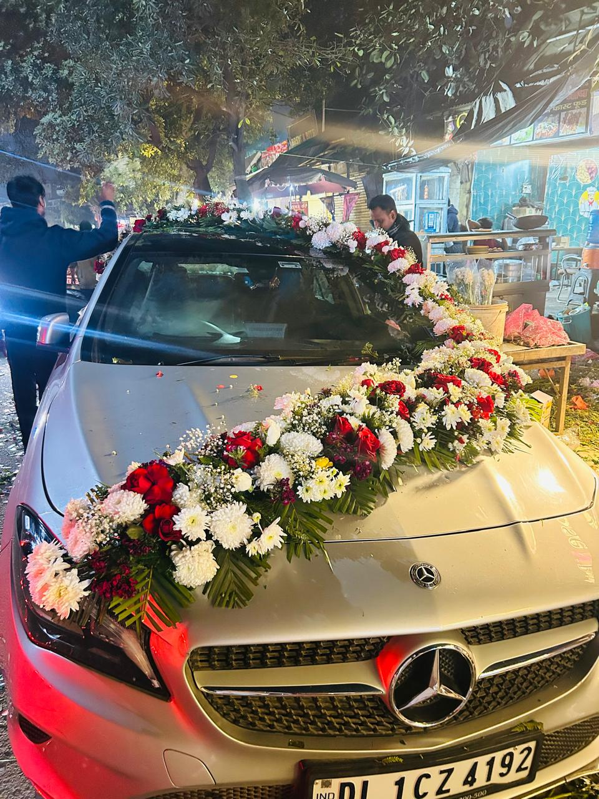
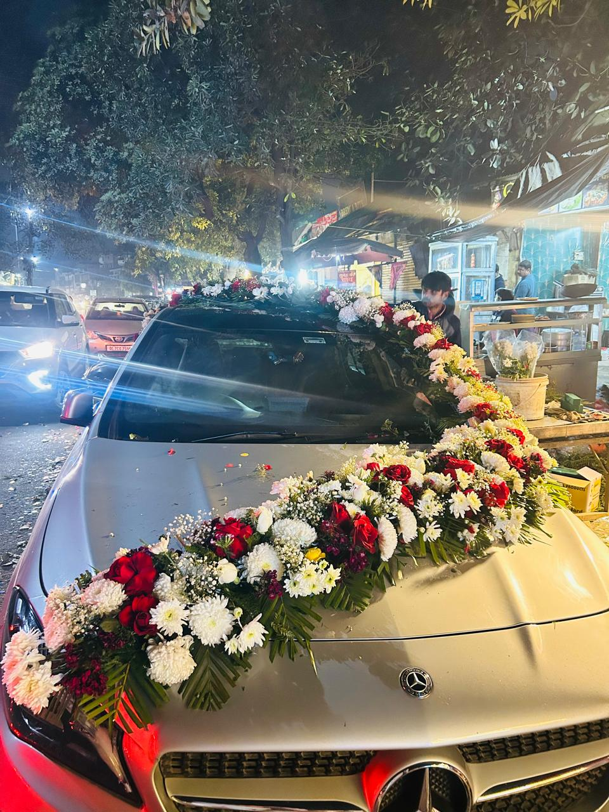
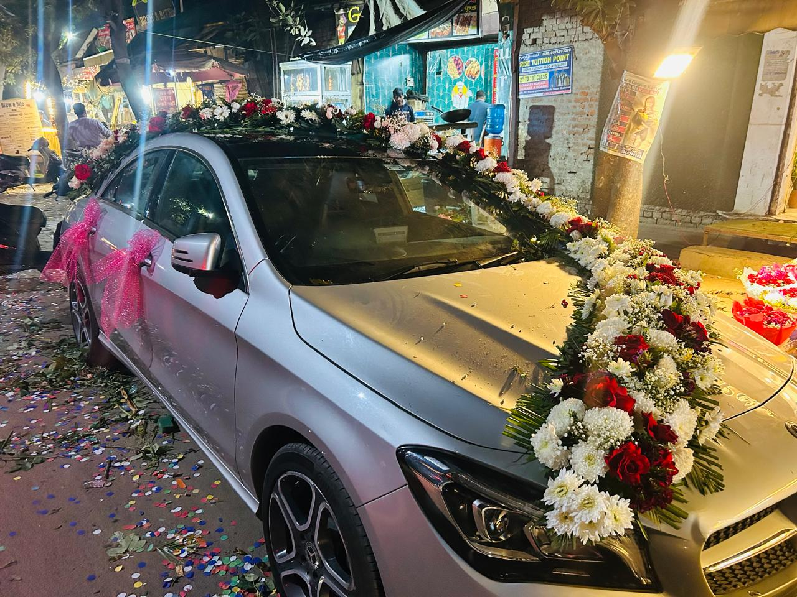
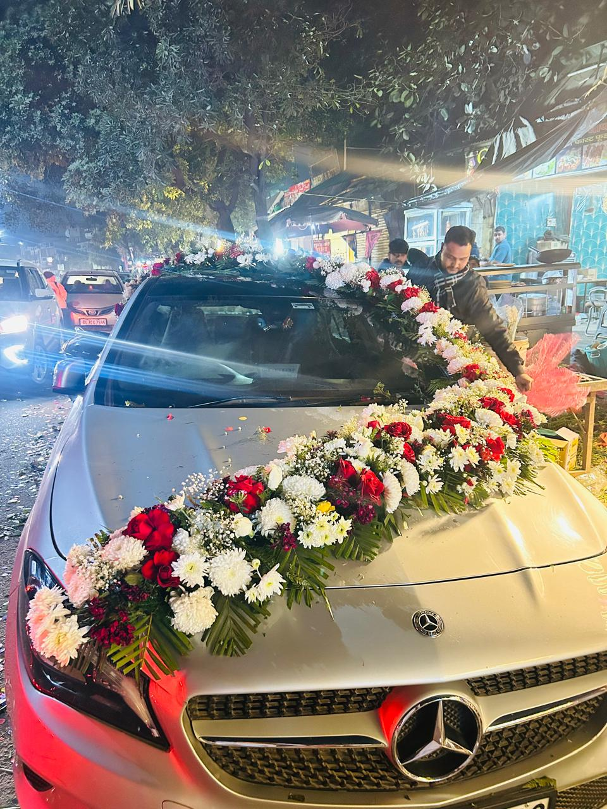
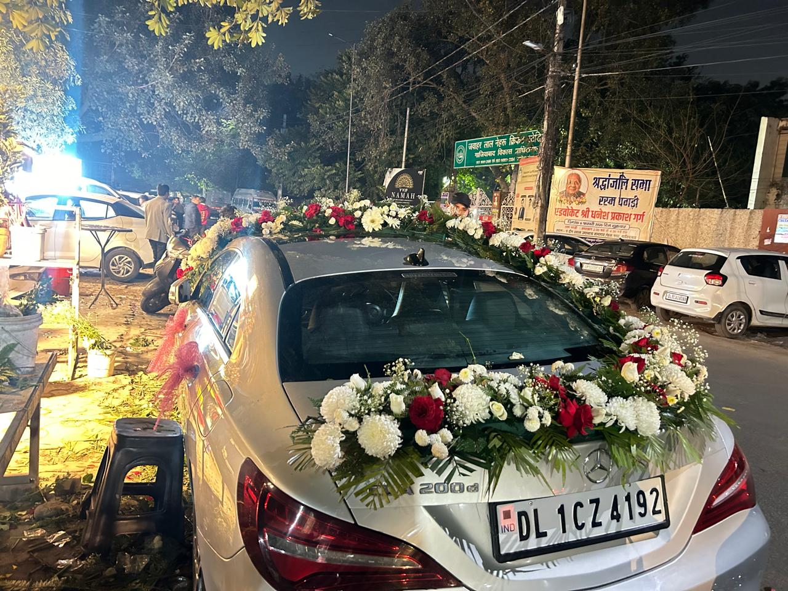

Wedding Car Decoration in Ghaziabad & Noida | Fresh Shaadi Car Phool Sajawat

Fresh wedding car flower decoration for a stylish shaadi entry in Ghaziabad
If you are looking for wedding car decoration in Ghaziabad and Noida, Sharma Flower Decorators offers fresh, elegant, and customized shaadi car phool sajawat for every type of wedding. We are a professional florist in Ghaziabad serving families for the last 50 years, and our shop is located at Chaudhary Mod Flower Market. From simple bonnet decoration to full premium bridal car styling, our team creates designs that look rich in photos and stay neat throughout the function.
We always use fresh flowers and focus on trending, latest, and customized wedding car decoration work. Many families in Raj Nagar call us when they want a clean and graceful design before the baraat leaves home. Our aim is simple: the car should look wedding-ready, elegant, and budget-friendly without feeling overdone.

Budget-friendly wedding car decoration with fresh flowers and a neat premium finish
Fresh Flower Car Decoration with On-Location Service
We provide on-location service at home, banquet, and farm house venues, so you do not need to worry about bringing the car anywhere after getting ready. In Indirapuram, customers often prefer decoration at home so the bride and groom can inspect the car just before leaving. Our team reaches on time, completes the setup carefully, and keeps the overall look photo-friendly from every angle.
For bookings in Sector 62 Noida, we usually get requests for modern floral lines across the bonnet, mirror bunches, and soft front-grill detailing. These designs work very well for both luxury cars and mid-size sedans. If you also need venue decor for the same function, you can read our related post on wedding flower decoration in Ghaziabad, Noida and Greater Noida.

Customized wedding car design planned to match the couple's style and budget
Trending and Latest Customized Designs
Every wedding has a different mood, so we do not force one fixed style on every customer. In Vasundhara, some families want a minimal white-and-red rose look, while others ask for fuller floral coverage for a grand bridal feel. We suggest the right balance according to car size, function timing, and weather conditions.
In Sector 76 Noida, customers usually ask for trending designs that look premium but remain easy on the budget. That is where our experience helps. We recommend combinations that create a strong wedding impression without unnecessary excess, and we keep the front view, side profile, and ribbon flow visually balanced.
- Fresh flower bonnet decoration
- Side mirror floral bunches
- Front grill and handle styling
- Custom ribbon and color coordination
- Budget-friendly to premium wedding car packages

Location-based service for home, banquet, and farm house wedding car decoration
Why Families in Ghaziabad and Noida Choose Sharma Flower Decorators
Our long experience matters because wedding timing is tight and decoration mistakes are very visible. In Kaushambi, many families contact us because they want dependable service from a florist who understands wedding rush, local routes, and practical setup time. We keep the work professional, neat, and respectful of the event schedule.
In Sector 137 Noida, customers often ask if the service can be arranged directly at the apartment tower, villa, or banquet parking area. Yes, our team handles exactly that. The same approach also helps if you have a ring ceremony or engagement around the same time. You can also see our Sagai and ring ceremony flower decoration service in Ghaziabad for matching event styling.
Because we work from Chaudhary Mod Flower Market, we are able to source flowers quickly and keep the work fresh. This is one reason our customers in Crossing Republik and nearby locations trust us for same-day or scheduled wedding decoration jobs. We focus on budget-friendly service, but the final result should still feel special enough for a once-in-a-lifetime occasion.

Affordable wedding car decoration designed for elegant entry photos and practical local service
Best for Home, Banquet, and Farm House Weddings
Not every wedding begins from the same kind of location. Some baraats start from home, some from a banquet hall, and others from a farm house venue. In Sector 18 Noida, event timing can be tight because cars need to move quickly, so our team plans fast installation without compromising the finish. The result is a car decoration setup that looks polished, fresh, and ready for photos as soon as the family is ready.
If you want a florist who understands local weddings, fresh flower quality, and customized decoration within budget, Sharma Flower Decorators is ready to help. We create wedding car decoration in Ghaziabad and Noida that feels personal, stylish, and practical for real families.
Frequently Asked Questions
Do you use fresh flowers for wedding car decoration?
Yes. We always use fresh flowers and arrange them according to the weather, travel time, and car design so the decoration stays attractive during the wedding movement.
Can you decorate the car at home or directly at the venue?
Yes. We provide on-location service at home, banquet, and farm house venues in Ghaziabad and Noida.
Do you offer budget-friendly wedding car decoration?
Yes. We offer simple, medium, and premium customized options so customers can choose according to their budget and event style.